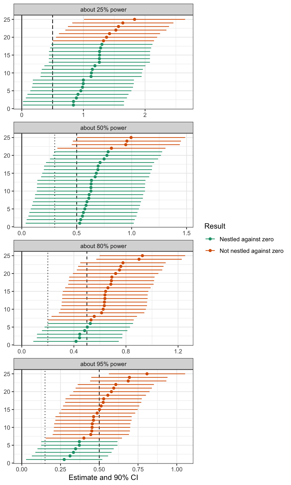

Power, Part II: What Do Confidence Intervals from High-Powered Studies Look Like?
Confidence Intervals Should Rarely Nestle Against Zero
statistical power
hypothesis tests
power analysis
methodology
confidence intervals
computing
R
Under-powered studies tend to produce confidence intervals that are nestled right up against zero. Well-powered studies tend to produce confidence intervals that fall further away. A literature that produces confidence intervals that consistently nestle right up against zero is likely a collection of under-powered studies.
Author
Carlisle Rainey
Published
May 25, 2023
Background
In this post, I address confidence intervals that are nestled right up against zero.1 These intervals indicate that an estimate is “barely” significant. I want to be clear: “barely significant” is still significant, so you should still reject the null hypothesis.2
2 I’m focusing on confidence intervals here because inference from confidence intervals is a bit more intuitive (see Rainey 2014 and Rainey 2015. In the cases I discuss, whether one checks whether the p-value is less than 0.05 or checks that confidence interval contains zero are equivalent.
But I want to address a feeling that can come along with a confidence interval nestled right up against zero. A feeling of victory. It seems like a perfectly designed study. You rejected the null and collected just enough data to do it.
But instead, it should feel like a near-miss. Like an accident narrowly avoided. A confidence interval nestled right up against zero indicates that one of two things has happened: either you were (1) unlucky or (2) under-powered.
Because “unlucky” is always a possibility, we can’t learn much from a particular confidence interval, but we can learn a lot from a literature. A literature with well-powered studies produces confidence intervals that often fall far from zero. A well-powered literature does not produce confidence intervals that consistently nestle up against zero. Under-powered studies, though, do tend to produce confidence intervals that nestle right up against zero.
A Simulation
I’m going to explore the behavior of confidence intervals with a little simulation. In this simulation, I’m going to assert a standard error rather than create the standard error endogenously through sample size, etc. I use a true effect size of 0.5 and standard errors of 0.5, 0.3, 0.2, and 0.15 to create studies with 25%, 50%, 80%, and 95% power, respectively.3 I think of 80% as “minimally-powered” and 95% as “well-powered.”
3 I’m ignoring how to choose the true effect, estimate the standard error, and compute power. For now, I’m placing all this behind the curtain. See Daniël Lakens’ book [Improving Your Statistical Inferences] for discussion (h/t Bermond Scoggins).
I’m using a one-sided test (hypothesizing a positive effect), so I’ll use 90% confidence intervals with arms that are 1.64 standard errors wide. Let’s simulate some estimates from each of our four studies and compute their confidence intervals. I simulate 5,000 confidence intervals to explore below.
Code
# load packageslibrary(tidyverse)# create a parameter for the true effecttrue_effect <-0.5# just assumed by me# create a data frame of standard errors (with approximate power)se_df <-tribble(~se, ~pwr,0.5, "about 25% power",0.3, "about 50% power",0.2, "about 80% power",0.15, "about 95% power")# create function to simulate estimates for each standard errorsimulate_estimates <-function(se, pwr) {tibble(est =rnorm(n_cis, mean = true_effect, sd = se),se = se,pwr = pwr )}# simulate the estimates, compute the confidence intervals, and wranglen_cis <-5000# the number of cis to createci_df <- se_df %>%# simulate estimatespmap_dfr(simulate_estimates) %>%# compute confidence intervalsmutate(lwr = est -1.64*se, upr = est +1.64*se) %>%# summarize the location of the confidence intervalmutate(result =case_when(lwr <0~"Not significant", lwr < se ~"Nestled against zero", lwr >= se~"Not nestled against zero"))
Now let’s quickly confirm my power calculations by computing the proportion of confidence intervals to the right of zero. These are about right. In a later post, I’ll describe how I think about computing these quantities.
Code
# confirm power calculationsci_df %>%group_by(se, pwr) %>%summarize(sim_pwr =1-mean(result =="Not significant"),sim_pwr = scales::percent(sim_pwr, accuracy =1)) %>%select(SE = se, Power = pwr,`Percent Significant`= sim_pwr) %>% kableExtra::kable(format ="markdown")
SE
Power
Percent Significant
0.15
about 95% power
96%
0.20
about 80% power
80%
0.30
about 50% power
52%
0.50
about 25% power
26%
What Do Confidence Intervals from Well-Powered Studies Look Like?
Now let’s see what these confidence intervals look like. 5,000 is too many to plot, so I sample 25. But I applied the statistical significance filter first. This mimics the publication process and makes the plots a little easier to compare. My argument doesn’t depend on this filter, though.
4 4 studies x 25 simulated intervals per study = 100 intervals.
There are three important vertical lines in these plots.
The solid line indicates zero. All confidence intervals are above zero because I applied the significance filter.
The dotted line indicates one standard error above zero. This varies across panels because the standard error varies across panels.
The dashed line indicates the true effect of 0.5. Because I applied the significance filter, the lower-powered studies are consistently over-estimating the true effect.
The intervals are green when the lower bound of the 90% confidence interval falls within one standard error of zero—that’s my definition of “nestled up against zero.” The intervals are orange when the lower bound falls further than one standard error above zero.
Notice how low-powered studies tend to nestle their confidence intervals right up against zero. Almost all of the confidence intervals from the study with 25% power are nestled right up against zero. Very few of the confidence intervals from the study with 95% power are nestled up against zero.
Again, you should apply this standard to a literature. You should not apply this standard to a particular study because even well-powered studies sometimes produce confidence intervals that nestle up against zero. But when you start to see confidence intervals consistently falling close to zero, you should start to assume that the literature uses under-powered studies and that the estimates in that literature are inflated due to Type M errors (Gelman and Stern 2014).
Code
gg_df <- ci_df %>%filter(lwr >0) %>%# apply significance filter # sample 25 intervals (from those that are significant)group_by(se, pwr) %>%sample_n(25) %>%# create id (ordered by estimate value)group_by(se, pwr) %>%arrange(est) %>%mutate(ci_id =1:n())ggplot(gg_df, aes(x = est, xmin = lwr, xmax = upr, y = ci_id,color = result)) +facet_wrap(vars(pwr), ncol =1, scales ="free_x") +geom_vline(data = se_df, aes(xintercept = se), linetype ="dotted") +geom_vline(xintercept =0) +geom_vline(xintercept = true_effect, linetype ="dashed") +geom_errorbarh(height =0) +geom_point() +scale_color_brewer(type ="qual", palette =2) +theme_bw() +labs(x ="Estimate and 90% CI",y =NULL,color ="Result")

Showing This Another Way: Density of the Lower Bounds
We can also plot the density of the lower bounds of these 5,000 intervals. This approach shows the “nestling” most clearly. The plots below show that the lower bounds of confidence intervals tend to nestle close to zero when the power is low, and lie further from zero when the power is high.
Lastly, I compute the percent of confidence intervals that are nestled right up against zero. For a well-powered study with 95% power, only about 1 in 5 confidence intervals nestle up against zero. For a poorly-powered study with 25% power, about 4 in 5 of confidence intervals nestle up against zero (among those that are above zero). The table below shows the remaining frequencies.
Code
ci_df %>%group_by(se, pwr, result) %>%summarize(frac =n()/n_cis, .groups ="drop") %>%pivot_wider(names_from = result, values_from = frac) %>%mutate(`Nestled, given significant`=`Nestled against zero`/(1-`Not significant`),`Not nestled, given significant`=`Not nestled against zero`/(1-`Not significant`)) %>%select(SE = se, Power = pwr,`Not significant`,`Nestled against zero`,`Not nestled against zero`,`Nestled, given significant`,`Not nestled, given significant`) %>%mutate(across(`Not significant`:`Not nestled, given significant`, ~ scales::percent(., accuracy =1))) %>% kableExtra::kable()
SE
Power
Not significant
Nestled against zero
Not nestled against zero
Nestled, given significant
Not nestled, given significant
0.15
about 95% power
4%
21%
75%
22%
78%
0.20
about 80% power
20%
35%
45%
44%
56%
0.30
about 50% power
48%
35%
17%
67%
33%
0.50
about 25% power
74%
21%
5%
82%
18%
Summary
In this post, I address confidence intervals that are nestled right up against zero. These intervals can suggest a perfectly powered study—not too much, not too little. But instead, a confidence interval nestled right up against zero indicates that one of two things has happened: either you were (1) unlucky or (2) under-powered.
Because “unlucky” is always a possibility, we can’t learn much from a particular confidence interval, but we can learn a lot from a literature. A literature with well-powered studies produces confidence intervals that often fall far from zero. A well-powered literature does not produce confidence intervals that consistently nestle up against zero. Under-powered studies, though, do tend to produce confidence intervals that nestle right up against zero.
Key Takeaway
Under-powered studies tend to produce confidence intervals that are nestled right up against zero. Well-powered studies tend to produce confidence intervals that fall further away. A literature that produces confidence intervals that consistently nestle right up against zero is likely a collection of under-powered studies.